AirSticks 2.0: Instrument Design for Expressive Gestural Interaction

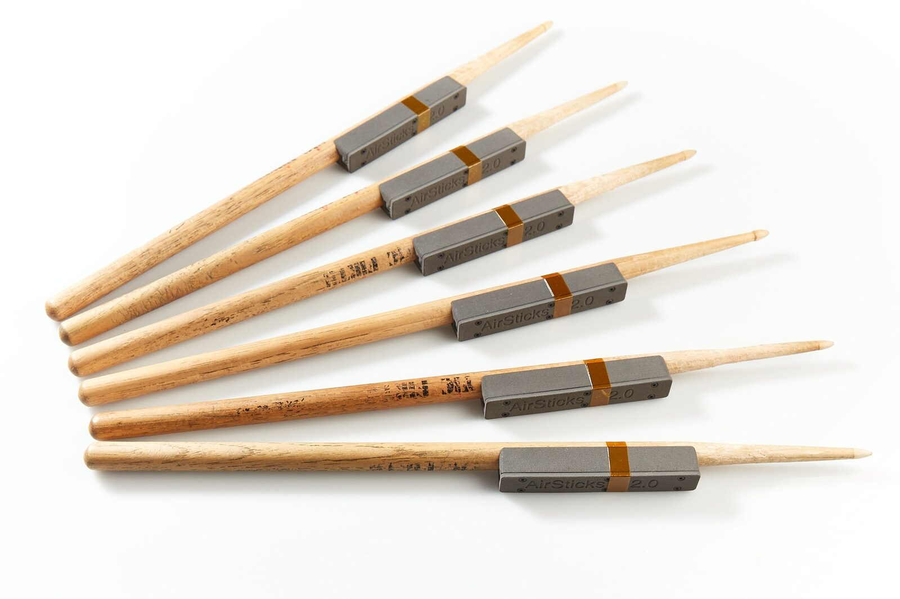
AirSticks 2.0 devices attached to a conventional drumstick.
Abstract
In this paper we present the development of a new gestural musical instrument, the AirSticks 2.0. The AirSticks 2.0 combines the latest advances in sensor fusion of Inertial Measurement Units (IMU) and low latency wireless data transmission over Bluetooth Low Energy (BLE), to give an expressive wireless instrument capable of triggering and manipulating discrete and continuous sound events in real-time. We outline the design criteria for this new instrument that has evolved from previous prototypes, give a technical overview of the custom hardware and software developed, and present short videos of three distinct mappings that intuitively translate movement into musical sounds.
Author Keywords
Gestural instruments, music, NIMEs
CCS Concepts
•Applied computing → Sound and music computing; •Human-centered Computing → Gestural Input; Sound-based input/output;
Introduction
In the broader field of HCI, most gesture-based interactions make heavy use of gesture recognition to issue discrete commands [1]. But with gestural open-air musical instruments, where handheld controllers are constantly tracked with motion tracking sensors [2], gestural data can be treated as a continuous stream to control elements of sound without identifying discrete gestures [1].
Few instruments combine discrete and continuous control in a unified manner, with most tending to favour either discrete or continuous control. Two examples of gestural instruments that favour discrete control are the Freedrum1 and Aerodrums.2 Both take the form of drumsticks, and are reliable in detecting when a strike in the air is made, even assigning velocity and note value to these discrete gestures. These tools can be played with both hands and require energy to excite the amplitude of the sound. But these tools merely mimic the data that an electronic drum kit with trigger pads provides. They don’t provide complex mappings or the control of timbre. Both can be set up easily and take up less space than electronic drum kits, favouring portability over range of expression [3].
Other gestural controllers, such as the Mi.Mu gloves3 and the Wave ring,4 offer continuous control. In these controllers, pitch, yaw and roll movements are constantly detected and the player is invited to map these data streams to vary sound parameters, often to change an effect such as reverb length or delay feedback [4][5][6]. Being wearables, players are free to play another instrument with both hands while making gestures around the instrument to manipulate the sound [7]. However, these controllers are rarely used to trigger precisely timed, discrete sound events, and are rarely mapped in a way that requires energy to maintain the sound’s amplitude.
The AirSticks 2.0 is a new gestural musical instrument that combines both discrete and continuous control to facilitate expressive gestural musical performances. The instrument uses the real-world metaphors, in this case the kinaesthetic mimicry of physical gestures used to play acoustic instruments such as drums, shakers and string instruments, to initiate a sound. These metaphors are then extended through various gestures to give fine control over pitch, volume and timbre.
In the paper we will describe some of the technical and creative decisions made by three key collaborators - a software engineer, a percussionist and a composer - in the development of this instrument so far, from the design of custom hardware and software, to the creation of several mapping outputs. As practice-based researchers we will use videos of these mappings to illustrate our findings, and argue that this documentation is vital in sharing some of the tacit knowledge embedded in the physical experience of playing the instrument [8][9][10][11].
Design Methodology
AirSticks 1.0
The AirSticks 1.0 relied on off-the-shelf virtual reality (VR) controllers (the Razer Hydra5) which were discontinued one year into the project. The controllers, shown in Figure 2(a), were far from ideal for music making, particularly as they are wired to a central hub, limiting the performers range of movement. They did provide the designers with absolute 3D position and orientation data. This data was also used to implement a discrete triggering system where a strike could be detected by moving through a virtual ‘triggering plane’ set parallel to the ground, with velocity of the sound event also detected. Custom software allowed the sound designer to trigger a sound, keep the sound on, manipulate the sound with various movements, and then switch the sound off by pulling back up above the triggering plane [12]. This led to a very expressive gestural instrument that further extended the metaphor of playing an electronic drum kit, giving the performer full control over every nuance of the sound - the attack, sustain, timbre and release6.
The AirSticks 1.0 has been ‘ecologically validated’ [13][14] outside the lab through hundreds of real-time music performances including several contributions to NIME conferences since 2014 [15]. Once the original AirSticks 1.0 software was developed, only a few iterations of the software were developed, with most design developments occurring within the mapping of movement to sound in Ableton Live.

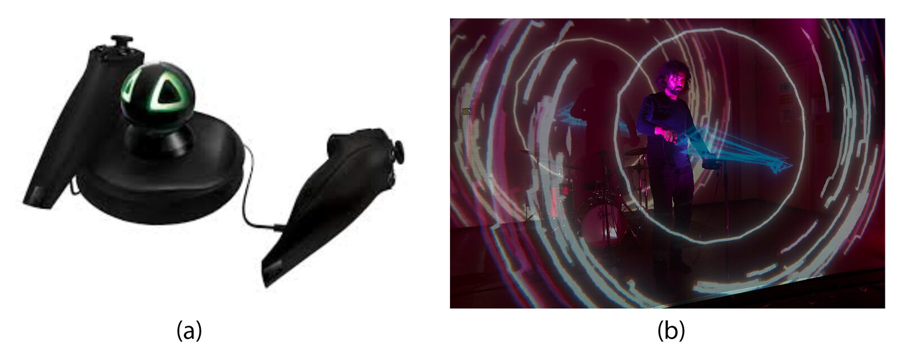
(a) The Razer Hydra gaming controllers used in AirSticks 1.0.
(b) Image taken during an AirSticks 1.0 performance.
Design Criteria for AirSticks 2.0
The AirSticks 2.0 were developed in response to the limitations of AirSticks 1.0. The opportunity to redesign both the hardware and software - moving from commercial gaming controllers to bespoke hardware and custom software - allowed us to re-conceptualise the design of an expressive and responsive gestural musical system. Two key hardware design considerations that came out of the development of AirSticks 1.0 were:
the instrument should be wireless, and
drumstick-like: for the physical design to take on a form akin to that of a drumstick, providing natural affordances for musicians.
These hardware design considerations, combined with the findings from performing with the AirSticks 1.0 for several years, led to the emergence of a new set of system design considerations for the AirSticks 2.0:
Low-latency: the overall latency between movement and sound generation should be as low as possible, keeping any latency imperceptible for professional musicians who are able to move with great speed and dexterity (a proficient drummer can hit a drum with one hand at least eight times per second or at 125ms intervals)
Data Transparency: for the software to expose the data it receives, providing visualisations and diagnostic tools to contextualise this data
Plug and Play: for the software to utilise industry standard music protocols, allowing data to be immediately accessible for integration within existing Digital Audio Workstations (DAWs)
Configurable: for the software to give sound designers control over the calibration of the data they receive in their DAW of choice
Modular: for the software to be fully self-contained and work within a chain of applications that are each responsible for a particular function, allowing for the future development of additional applications that can create new links in the chain
A software designer (the lead author on this paper) worked closely with two sound designers and a hardware designer (the co-authors) to implement these design considerations in the creation of the AirSticks 2.0. The instrument was developed through an iterative process whereby, after the initial hardware prototypes were made, the software designer delivered working prototype software to the two sound designers, allowing them to start creating new mappings. Once these mappings were created, all the designers explored and engaged with the new AirSticks mappings in the studio. They then provided feedback and discussed the next iteration of the software. These mappings were also documented through video performances and shared in a video log, some internally, and others with the public.
In creating the mappings, the sound designers deployed bodystorming techniques - an embodied design approach considered as a form of prototyping in context [16]. Throughout the design process, we used a collaborative practice-based approach [9], similar to that implemented in the design of the AirSticks 1.0, using short design cycles and deadlines in the form of public workshops and performances to ‘ecologically validate’ the developments.
AirSticks 2.0 - Technical Overview

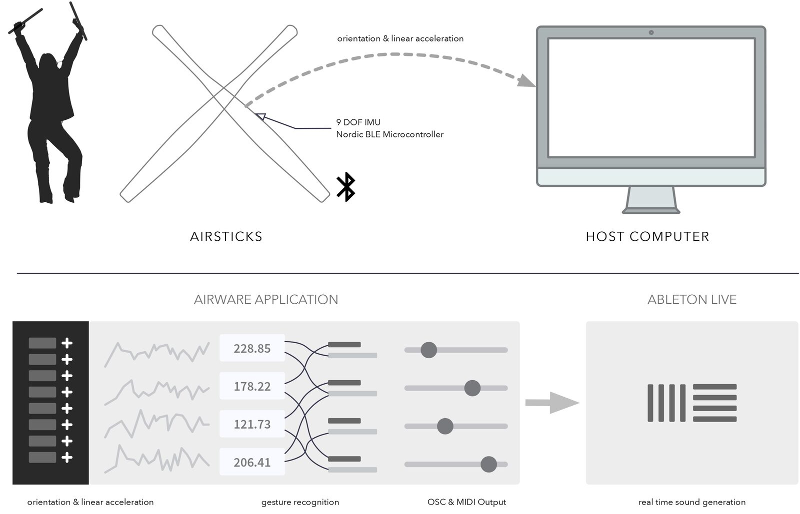
Schematic diagram of the AirSticks system.
System Architecture
We will now give a technical overview of the AirSticks 2.0, which hereby will be referred to as the AirSticks. As outlined in Figure 3 the AirSticks system comprises:
one or more wireless handheld devices, the AirSticks, capable of transmitting real-time information about their movement in three-dimensional (3D) space up to 100 times per second,
custom software, AirWare, running on a nearby computer to receive, analyse and track the wireless data stream from the devices (with a range of approximately seven metres) in order to trigger and manipulate sound events that are outputted over MIDI and OSC protocols, and
a Digital Audio Workstation (DAW) to receive the MIDI and OSC information and convert this data into meaningful musical output.
For explanatory clarity, we will focus on the use of a single AirStick throughout the paper, although our system can work with up to seven devices simultaneously (an example of a two-handed AirSticks performance is provided at the end of Section ‘Future Work’).
Hardware
To align with the design criteria, custom electronics hardware was developed to create a low-latency, handheld, wireless device capable of sensing and reporting gestural information as the device is moved and articulated in 3D space. The AirSticks device utilises a Nordic nRF528327 micro-controller with custom firmware optimised for low-latency data transfer using the Bluetooth Low Energy (BLE)8 protocol. A Bosch BNO0559 Inertial Measurement Unit (IMU) with 9-Degrees of Freedom (9-DOF) is used to detect the AirStick’s orientation and movement. The IMU integrates a triaxial accelerometer, an accurate close-loop triaxial gyroscope and a triaxial geomagnetic sensor to make up the 9-DOF. On-device sensor fusion algorithms combine the 9-dimensional data stream from the three independent sensors to determine the:
absolute orientation - the direction in which the device is pointing at any given moment, and
linear acceleration - the current acceleration of the device along the three axes local to the device’s frame of reference.

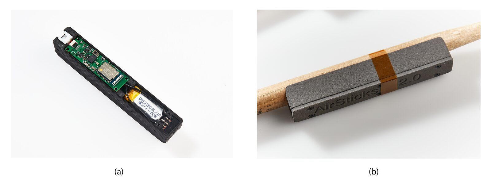
(a) AirSticks printed circuit board prototype
(b) Prototype AirStick in 3D printed case attached to a conventional drum stick.
A custom printed circuit board (PCB), shown in Figure 4(a), was created to integrate the micro-controller, IMU and additional circuitry required for power management on a single circuit board measuring 13mm x 46mm. For prototyping, a 3D printed enclosure was designed to house the AirSticks PCB together with a small 3.7V 110mAh Lithium-Polymer (Li-Po) battery, which allows for approximately four hours of continuous playing before recharging. The case, shown in Figure 4(b), is the same width as a standard drumstick and can be easily attached using tape.
Software
Software Overview
A custom software application, AirWare, has been developed to process the wireless data streams transmitted from one or more AirSticks devices in real-time. AirWare receives and analyses the orientation and linear acceleration data, identifying gestural features from the continuous movement of the device that can be used to trigger and manipulate sounds. In the following sections we will revisit the system design criteria presented earlier in this paper, expressing how each of the criteria have been realised through the development of AirWare.
Data Transparency

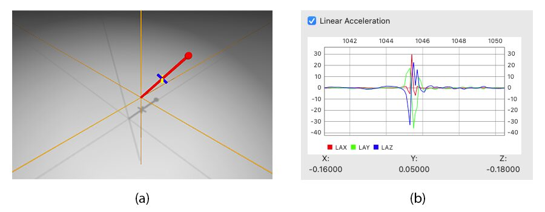
(a) 3D Visualisation of AirStick absolute-orientation.
(b) Plot of AirStick linear-acceleration over time.
AirWare was designed with data transparency in mind, providing diagnostic features to visualise and contextualise the incoming data from a connected AirSticks device. Within the ‘Charts’ page of the AirWare application, plots of the device’s orientation and linear acceleration data are updated live, allowing for gestures to be performed and the underlying data to be visualised in real-time. An example chart is shown in Figure 5(b).
A 3D visualisation of the AirSticks device is also provided, giving real-time feedback of the device’s current absolute orientation as shown in Figure 5(a). These visual and analysis features give context to the continuous data stream received from the device, allowing the sound designers to better understand how the sensors onboard the AirSticks interpret movement.
Plug and Play
The ‘Plug and Play’ nature of AirWare is realised through the use of industry standard music protocols, allowing data to be immediately accessible for integration with a virtual instrument within existing DAWs. The design decision to use BLE as the wireless communication protocol further extends this ‘Plug and Play’ principle from a hardware perspective. This protocol is widely accessible across different types of devices including phones, tablets and laptop computers.
Configurable
AirWare was designed to be highly configurable, giving sound designers enormous flexibility on how movement and gesture can be interpreted as sound control information. All of the parameters that are used to process the AirSticks data in order to trigger and manipulate sound events are exposed in AirWare’s Graphic User Interface (GUI) through sliders, dials and tick boxes.
Modular
In keeping with modular design principles, AirWare has been designed to be one link in a chain of hardware devices and software applications that collectively result in an expressive gestural instrument. AirWare’s role within this chain is to receive, analyse and expose the continuous data streams from AirSticks devices, identifying intentional discrete and continuous gestural movements that can be used to generate sound events and control messages. As such, AirWare does not generate the audio signal itself, instead it outputs these sound event messages over two commonly used communication protocols in music making - MIDI and OSC. The sound event messages sent from AirWare can be received by a DAW, such as Ableton Live or Logic Pro,10 capable of using these sound events to control parameters of ‘virtual instruments’ - a type of software that acts as a sound module within the DAW. The audio signals generated by the DAW are then sent to between two and eight speakers, for stereo or surround sound, respectively.
One key benefit to this modular approach is the ability to create new links in the chain without impacting the operation or performance of the other self-contained modules. Providing this modularity gives sound designers the ability to develop additional applications that can sit between the AirWare and DAW applications, implementing new methods to analyse, track and react to the data streams that can result in the feeling of a totally new instrument. AirWare supports this type of development through the wealth of information that is made available to other applications through the OSC protocol.
Discrete And Continuous Gestures
In this section we explore how the gestural data received from an AirStick is analysed to achieve both discrete and continuous control of sound events. Within the context of the AirWare application, a ‘sound event’ is defined as a discrete command containing all the necessary information to trigger, control and resolve a sound-action or ‘chunk’ - a fragment of meaningful musical sound, typically in the 0.5 to 5 seconds range, related to an action [17][18].
AirWare sends sound events to a connected DAW application through the MIDI protocol, translating the gestural movement performed by the player into MIDI messages such as ‘Note On’, ‘Note Off’, ‘Note Number’, ‘Note Velocity’, ‘Pitch Bend’, ‘Aftertouch’ and continuous controller (CC) messages.
Discrete Control
To provide control of discrete sound events, such as a MIDI ‘Note On’ message, a number of note triggering systems have been implemented within AirWare that react to the AirStick’s movement in different ways. Each triggering system identifies specific features within the device’s data streams that represent intentional gestures performed by the player. As such, each triggering system creates a different mapping of physical movement to the generation of musical output, giving the player the experience of playing with a different instrument. This differentiation is further enhanced through the sounds themselves (e.g. a harp-like sound naturally affords gestures such as plucking, whereas a percussive sound suggests a strike action).
The sensor hardware that makes up the AirSticks device is capable of determining the device’s precise orientation at any given moment, but as we have no external point-of-reference we can not determine the device’s position. Working with this constraint of known orientation and unknown position, we have developed spatial mappings of musical concepts using just the device’s orientation, which can be thought of as the direction the device is pointing at any given moment - in effect a 3D compass bearing.
One such spatial mapping that has been developed uses the device’s orientation to select which musical note will be played (the MIDI ‘Note Number’), and analyses the device’s linear acceleration to identify when sound events should start and stop (MIDI ‘Note On’ and ‘Note Off’), as well as how ‘hard’ the note should be played (MIDI ‘Note Velocity’).
Note Selection

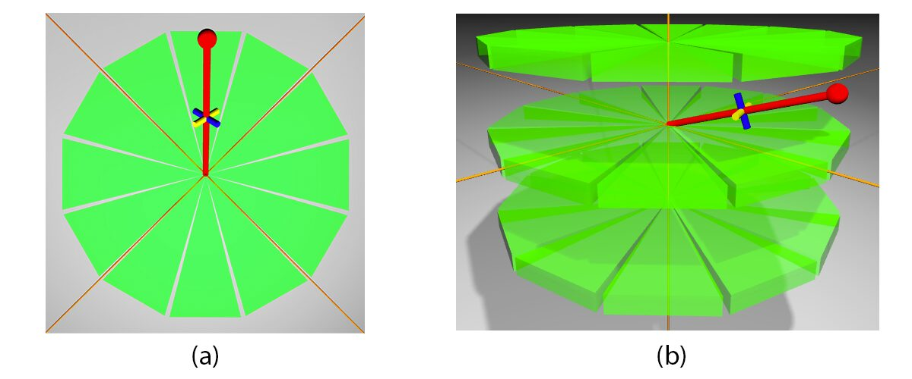
(a) Top-down view of spatial mapping showing 12 musical note segments arranged around the player.
(b) Side-view of spatial mapping showing three stacked layers of musical note segments.
In this spatial mapping, discrete musical notes are arranged around the player in a circle which is evenly split into 12 segments as shown in Figure 6(a). There are three of these circles stacked one on top of the other, as shown in Figure 6(b). The top-layer musical note segments are active when the device is raised with it’s orientation more than 45 degrees above horizontal, the middle-layer note segments are activated when the device’s orientation is within ±45 degrees from the horizontal, and the bottom-layer note segments are active when the device is lowered more than 45 degrees below the horizontal. The Note Number of these 36 notes can be changed using a scroll down menu which reveals different scales and placements of notes.
Note Triggering Events
Though there are several distinct well-documented techniques for detecting a discrete percussive gestural event [19][20][21][22][23][24][25][26][27], a new triggering system was created to work with the specific gestural data-types that are streamed from the AirSticks. To identify when a sound event should be initiated, the X, Y and Z components of the device’s linear acceleration are combined to calculate the magnitude of the resultant vector:
+(Yaccel)2+(Zaccel)2
where represents magnitude of the total linear acceleration. The magnitude of is thresholded to identify the moment when its absolute value rises above a configurable threshold, at which point a ‘Note On’ sound event is initiated as shown in Figure 7. The amount by which exceeds the threshold is used to determine the velocity of the triggered note. After a sound event has been initialised, the device’s linear acceleration value will peak then fall below the threshold, signified by a ‘Note Off’ sound event.

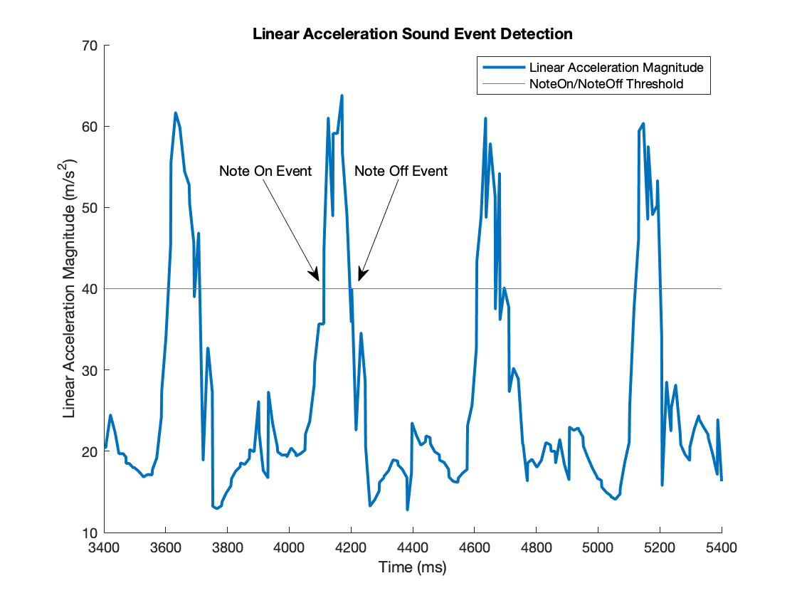
Analysis of linear-acceleration data showing thresholds used to identify sound events.
Continuous Control
AirWare provides a configurable interface to allow the mapping of different elements of the AirStick’s gestural movements to a variety of MIDI CC and OSC parameters. These MIDI CC and OSC parameters can be utilised within the DAW to provide continuous control over virtual instruments by manipulating elements of the sound event between the ‘NoteOn’ and ‘NoteOff’ commands.
The elements of the AirStick’s movement that can be configured for continuous control include the Euler angles (‘roll’, ‘pitch’ and ‘yaw’) that denote the AirStick’s orientation at any given moment, the X, Y and Z components that make up the AirStick’s linear-acceleration, as well as the magnitude of the total linear-acceleration vector. Combining these elements in different ways provides sound designers with a wealth of options to create bespoke musical interactions - such as rolling the wrist to control volume or using the device’s angle from the horizontal to control a filter. In addition to these raw elements that provide instantaneous measures of AirStick movement, a number of higher-level gestural elements are computed, and can also be configured for continuous control. Two of these measures, ‘AirStick Energy’ and the ‘Peg System’, are detailed below.
AirStick Energy
One such configurable measure that is exposed in AirWare’s GUI is the ‘AirStick Energy’. Advocating the concept of energy from Hunt and Wanderley’s [28], ‘AirStick Energy’ is a metric used to quantify the amount of movement of the device within a configurable time window. Keeping a rolling history of the device’s linear-acceleration values, ‘AirStick Energy’ is calculated by individually summing the linear acceleration X, Y and Z components over the given time window, then combining these individual components to calculate the magnitude of the resultant vector:
tXaccel)2+(∑t−ntYaccel)2+(∑t−ntZaccel)2
where represents the discrete moment in time at which ‘AirStick Energy’ is being calculated and represents the number of historical linear acceleration values that are included in the calculation (window size).
The result of combining linear acceleration values over a time window helps to smooth out the effects of noise within the instantaneous linear acceleration data stream [29][30][31] while also quantifying sustained movement within the time window.
Peg System
Building on the instantaneous data available from the AirStick device, the ‘Peg System’ has been developed to provide a convenient mechanism to spatialise musical events at specified locations within the orientation space of the AirStick’s movement. This system improves the accessibility of the orientation data by translating the direction the AirStick is pointing at any given moment into a set of continuous control events that can be configured to output on a variety of MIDI CC parameters.

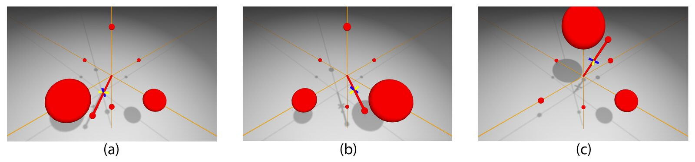
Visualisation of the Peg System within the AirWare (sphere size indicates the proximity of the AirStick to each peg).
A visualisation of this system is shown in Figure 8, in which six ‘Pegs’, also known as ‘Orientation Pegs’, are located at each of the 3D compass bearings around the player - ‘Forwards’, ‘Backwards’, ‘Up’, ‘Down’, ‘Left’ and ‘Right’. When the AirStick device is aligned and pointing in the direction of one of these ‘Pegs’, the connected MIDI CC parameter will show the maximum value of 127. As the AirStick's direction changes and it starts to point away from this ‘Peg’, the connected MIDI CC parameter will decrease in value, dropping to the minimum value 0 when the direction goes beyond a configurable angular distance from the ‘Peg’ (typically set to 90° or 180°).
Mappings
Mappings for the AirSticks were created by two sound designers, who we will refer to as sound designer A and sound designer B. Sound designer A, an expert percussionist and co-inventor of AirSticks 1.0, utilised Ableton Live for their mappings (in conjunction with a Max for Live11 patch that allows for some simple conversions of OSC data to parameter control within Ableton Live).
Sound designer B is an established composer who utilised Max12 and Logic Pro to create their mappings. Custom patches were built in Max to perform additional analysis on OSC data received from AirWare in order to trigger long-term structural changes in pre-composed pieces, such as tempo and moving from section to section.
The algorithms implemented in AirWare to identify meaningful gestures were co-developed through an iterative design process between the software designer and sound designers. The result of this iterative design process is presented in three key mappings:
Bells and Things - utilising the ‘Plug and Play’ spatial mapping and four ‘Orientation Pegs’;
Pulsing Synth - utilising ‘AirStick Energy’ and six ‘Orientation Pegs’;
Drummer - utilising ‘AirStick Energy’ together with additional processing of Energy over longer time periods in Max, and six ‘Orientation Pegs’;
The above mappings are introduced in Figure 9 as three 15s excerpts from performances and are discussed in more detail in the following sections.
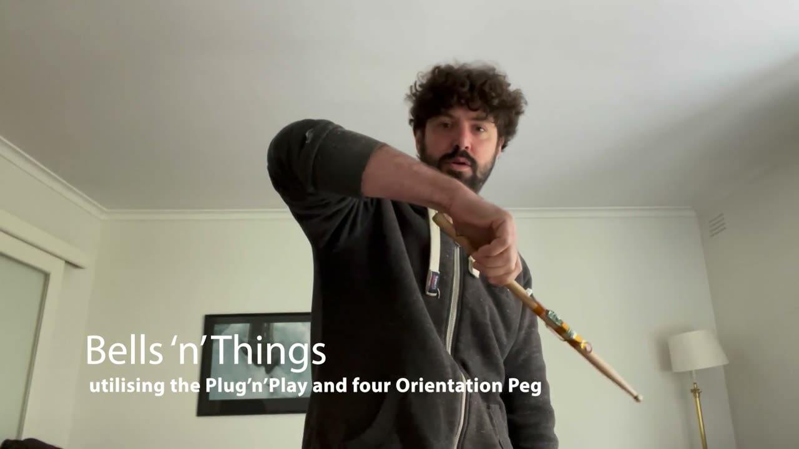
▶Video excerpts introducing the ‘Bells and Things’, ‘Pulsing Synth’ and ‘Drummer’ mappings: https://youtu.be/UiOklAPb8DU
Bells and Things

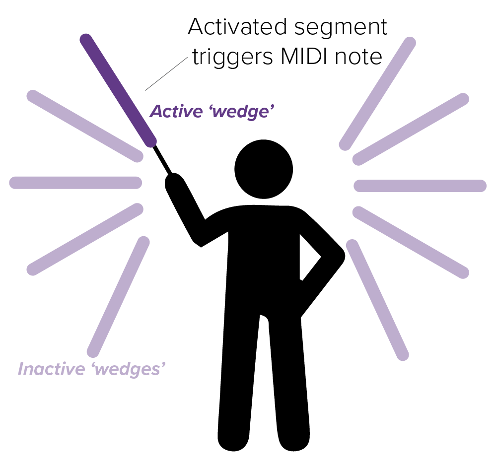
Bells and Things mapping.
In the Bells and Things mapping, the ‘Plug and Play’ MIDI messages out of AirWare were used with minimal OSC data. The MIDI output included ‘Note Values’ depending on the orientation of the AirStick and ‘Note Velocity’ depending on the Energy put into the AirStick. The simple OSC mapping involves four ‘Orientation Pegs’ located in front, behind, to the left and to the right of the performer. Each Peg represented a different instrument - a bell, a harp, a cymbal and a xylophone - allowing for cross-fading between the timbres, and the ability to find blends of the timbres between the Pegs. Using the ‘Plug and Play’ function, sound designer A scrolled through several potential virtual instruments in Ableton Live, and tested whether the sound of the instrument, and it’s response to ‘Note On’ and ‘Note Velocity’, was fulfilling and meaningful. Sound designer A would adjust the sensitivity settings in AirWare, exploring how these changed the experience of playing the instrument. Over time sound designer A began to spend less time adjusting and calibrating mappings, and more time playing and exploring with the AirStick. It is worth noting that sound designer A is also an expert percussionist, so feedback on the triggering system came from a place of having an intimate connection with both acoustic and electronic percussion instruments, including the AirSticks 1.0.
Through this mapping process, both brainstorming and bodystorming [16] techniques were employed as part of a natural design process. The mapping process evolved into an improvisation which can be seen in Figure 11.
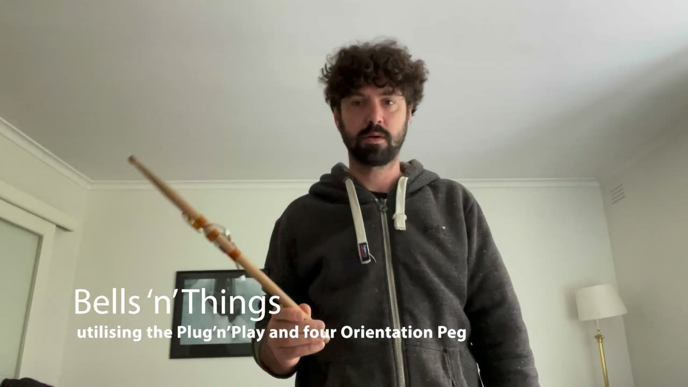
▶‘Bells and Things’ mapping demonstration: https://youtu.be/yHHuxpdlXsQ
Pulsing Synth

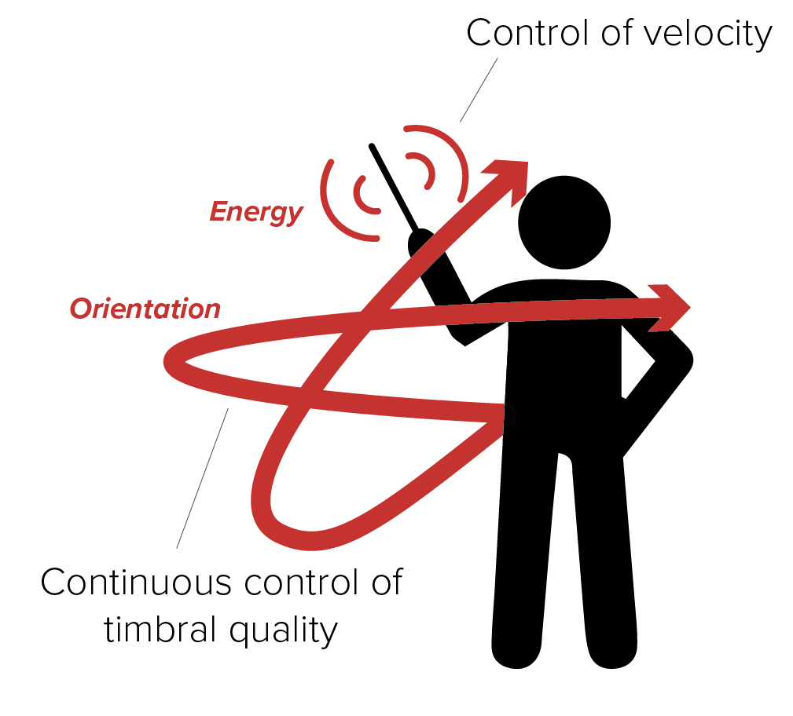
Pulsing Synth mapping.
The Pulsing Synth mapping uses only OSC messages from AirWare, minimally processed through Max for Live. The intention behind this mapping’s design was to inspire the player to dance in time to a beat, and depending on where they point and how much energy they put into the system, a different beat would emerge. The process began with sound designer A creating a pulsing synth kick drum sound and assigning Energy to control its velocity and tone. No energy would yield silence, and high energy would yield a dynamic change in both volume, tone and decay time, emulating some of the characteristics of playing acoustic instruments.
Six Orientation Pegs were then used to determine the timbral quality of sound, with the quality of the sound resembling a kick drum while pointing down and a snare drum while pointing up. Once the timbral palette of sound was to the sound designer’s liking, again a process of bodystorming emerged, as the sound designer’s embodied experience as a percussionist took over the design process. This led to further mapping ideas that were implemented in Ableton Live. Energy was assigned to more parameters, making the sound go through a reverb effect. If the stick was pointing downwards while this Energy was put into the system, a sound would play through a resonator effect. The mapping inspired the sound designer to play a rhythmic motif in a seven beat cycle, indicating the start of the cycle with a large strike that resembles a swing of a golf club to initiate the resonator. This gesture, along with other gestures such as poking, flicking and punching, emerged through the design process of this mapping, demonstrated in Figure 13.
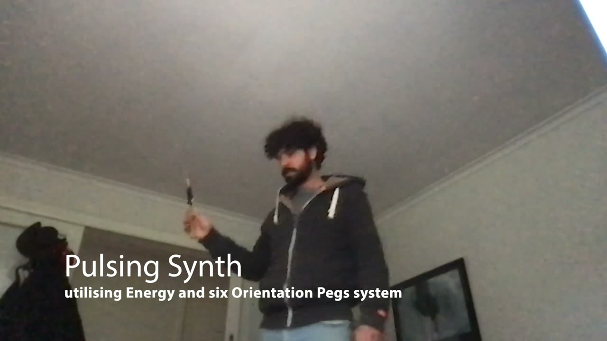
▶‘Pulsing Synth’ mapping demonstration: https://youtu.be/epnhrkt8OHs
Drummer

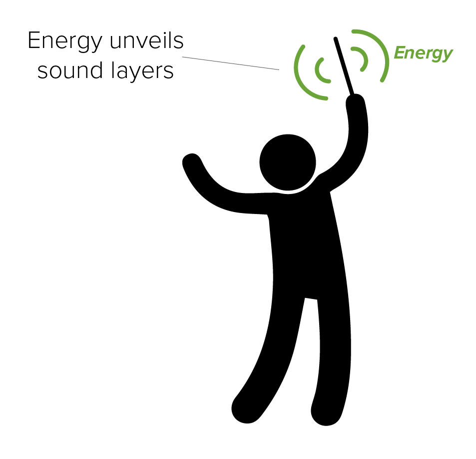
Drummer mapping.
The Drummer mapping, created by sound designer B uses a single variable to allow for experimentation with grooving rhythms, simulating a drum kit through the wave of a single stick. In this mapping, the player can ‘uncover’ different looped drumming lines, playing cymbal strikes and pulsating tom-toms within the drumming texture. The mapping was created for a performer with intellectual disability who desired to control the intensity of rhythmic pattern through the use of a single stick. A single OSC variable from the AirWare application, AirStick Energy, was used to control which layers of drumming can be heard.
The OSC messages were mapped to reveal pre-composed drum lines within Max. Following a process of experimentation with the performer, the sound designer would make small adjustments in the AirWare settings, settling on a combination that produced satisfying musical results. Orientation and energy in specific directions is ignored in this mapping in favour of the total amount of movement, irrespective of direction. The mapping is created in such a way that it does not require any calibration or orientation from the performer and is immediately responsive to clear, large gestures (i.e. does not need a strike in a particular direction, rather just an increase in energy).
This mapping affords "instant music" proposed by Cook [32] - a big gesture leads to a big drum hit, every time. However, the mapping also uses energy to change sound over time. Drumming gets louder, the tempo increases, and the bass line becomes more complex as more energy is put into the system. This creates a natural macro-structure that directly follows movement over a longer time scale. A demonstration of this mapping can be seen in Figure 15.
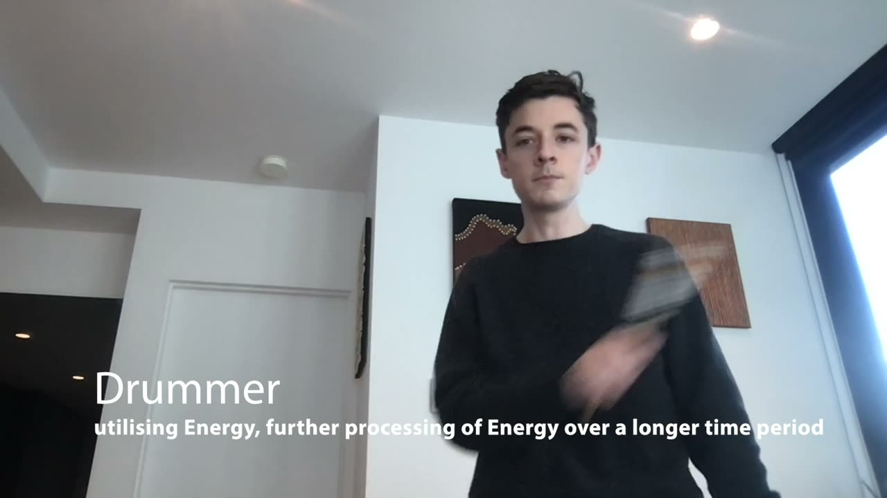
▶‘Drummer’ mapping demonstration: https://youtu.be/lwjDRl16_ds
Conclusion
In this paper we present our research into the design of a new gestural musical instrument which allows both the triggering and manipulation of sounds in real-time to facilitate expressive gestural musical performances. The instrument was created by a team of designers with diverse but overlapping skill-sets. We describe the technical and creative decisions made by the collaborators in the development of this instrument, from the design of custom hardware and software, to the creation of several mapping outputs in the form of documented performances.
Future Work

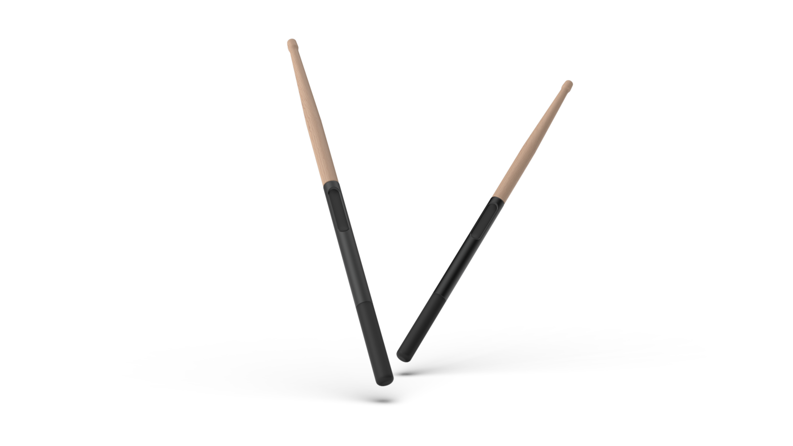
Computer Aided Design (CAD) prototype exploring new forms the AirSticks could take in future work.
From a software perspective, gesture recognition represents a natural evolution of the work discussed in this paper, building on sound designer A’s strong relationship with gesture and expression [33][34][35]. Collection of larger datasets of gestures from a wider range of performers will assist in forming meaningful gestural recognition for sound design. This work will be facilitated by the gesture recording feature within AirWare, allowing for rapid collection and organisation of gestures from the AirSticks, and may be complimented through machine learning techniques [36][37].
From a hardware perspective, the use of touch sensors is an additional area that will be explored. We will integrate the touch sensors alongside existing triggering systems to allow for greater control over MIDI ‘Note On’ and ‘Note Off’ events. This will lead to new designs of cases for the AirSticks that explore new physical forms (see Figure 16). We will also explore embedding the device in wrist bands and hats as we continue to collaborate with performers with disability [38].
From a performance perspective, ongoing collaborations with expert percussionists and performers with disability have premiered as public music performances. These collaborations have inspired new mappings and ways of working with the AirSticks, including dance, theatre and interactive visualisations. The learnings from these collaborations are being evaluated and will drive future design iterations. Additional mappings using two or more AirSticks will be another focus of future development, extending the gestural control and allowing new forms of musical interaction as shown in Figure 17.
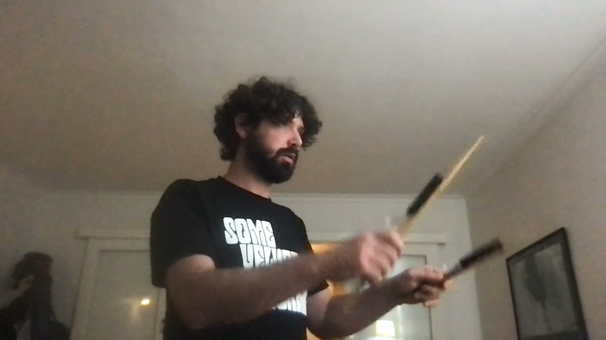
▶Two-handed mapping demonstration: https://youtu.be/lYY0Hhq8SUA
Ethics Statement
This paper complies with the NIME ethical standards and all research activities were conducted in accordance with the ethical standards of the institution and the national code for the responsible conduct of research.
The accessibility of this new musical interface is a core value of this research project, and has been a key consideration throughout the design process. Our approach to accessibility and inclusion has been to collaborate with artists with disability in order to understand the specific needs of the individual, and how the design of the instrument can be adapted to provide an inclusive interface for musical interaction. One of the mappings presented in this paper has been created for a performer with intellectual disability, and future collaborations will investigate alternative physical forms this instrument can take to improve access for performers with physical disability. Informed consent was obtained from all collaborators that were involved with this research project.
Footnotes
- ↩
- ↩
- ↩
- ↩
- ↩
One Five Nine - Comatone & Foley (Performed by Alon Ilsar) https://youtu.be/9eGP3fs29Sc
↩- ↩
https://www.bluetooth.com/specifications/specs/core-specification/
↩https://www.bosch-sensortec.com/products/smart-sensors/bno055/
↩- ↩
- ↩
- ↩
Citations
- ↩Holland, S., Mudd, Tom, Wilkie-McKenna, Katie, McPherson, Andrew, & Wanderley, M. M. (2019). New Directions in Music and Human-Computer Interaction (1st ed. 20).
- ↩Rovan, J., & Hayward, R. (2000). Typology of Tactile Sounds and their Synthesis in Gesture-Driven Computer Music Performance. In M. M. Wanderley & M. Battier (Eds.), Trends in Gestural Control of Music (pp. 297–320).
- ↩Holland, S., Mudd, Tom, Wilkie-McKenna, Katie, McPherson, Andrew, & Wanderley, M. M. (2019). New Directions in Music and Human-Computer Interaction (1st ed. 20).
- ↩Williams, P., & Overholt, D. (2017). bEADS Extended Actuated Digital Shaker. NIME 2017 Proceedings of the International Conference on New Interfaces for Musical Expression, 13–18.
- ↩Arterbury, T., & Michael Poor, G. (2019). 3D positional movement interaction with user-defined, virtual interface for music soware: Movemidi. Conference on Human Factors in Computing Systems - Proceedings, 1–6. https://doi.org/10.1145/3290607.3312954
- ↩Mitchell, T. (2011). SoundGrasp: A gestural interface for the performance of live music. International Conference on New Interfaces for Musical Expression, 2011, Oslo.
- ↩Mitchell, T., Madgwick, S., & Heap, I. (2012). Musical Interaction with Hand Posture and Orientation: A Toolbox of Gestural Control Mechanisms. Proceedings of the International Conference on New Interfaces for Musical Expression, May, 21–23.
- ↩Sullivan, J., Tibbitts, A., Gatinet, B., & Wanderley, M. M. (2018). Gestural control of augmented instrumental performance: A case study of the concert harp. ACM International Conference Proceeding Series, October. https://doi.org/10.1145/3212721.3212814
- ↩Biggs, M. (2000). the foundations of practice-based research. Working Papers in Art & Design.
- ↩Candy, L. (2006). Practice Based Research: A Guide. CCS Report, 1, 19. http://www.creativityandcognition.com/resources/PBR%20Guide-1.1-2006.pdf
- ↩Langer, S. K. (2009). Philosophy in a new key: A study in the symbolism of reason, rite, and art. Harvard University Press.
- ↩Borgdorff, H. A. H. (2012). The conflict of the faculties: Perspectives on artistic research and academia. Leiden University Press.
- ↩Ilsar, A. A. (2018). The AirSticks: a new instrument for live electronic percussion within an ensemble [Phdthesis].
- ↩Schmuckler, M. A. (2001). What is ecological validity? A dimensional analysis. Infancy, 2(4), 419–436.
- ↩McCormack, J., Ilsar, A., Chandler, T., Yeates, M., Wilson, E., Gambardella, C. C., Rajcic, N., Llano, M. T., & Bahng, S. (2021). Practice-based research at SensiLab. In The Routledge International Handbook of Practice-Based Research (pp. 92–106). Routledge.
- ↩Ilsar, A., Havryliv, M., & Johnston, A. (2014). Evaluating the Performance of a New Gestural Instrument Within an Ensemble. NIME, 339–342.
- ↩Schleicher, D., Jones, P., & Kachur, O. (2010). Bodystorming as Embodied Designing. Interactions, 17(6), 47–51. https://doi.org/10.1145/1865245.1865256
- ↩Candy, L. (2006). Practice Based Research: A Guide. CCS Report, 1, 19. http://www.creativityandcognition.com/resources/PBR%20Guide-1.1-2006.pdf
- ↩Godøy, R. I. (2009). Chunking sound for musical analysis. Lecture Notes in Computer Science (Including Subseries Lecture Notes in Artificial Intelligence and Lecture Notes in Bioinformatics), 5493 LNCS(section 2), 67–80. https://doi.org/10.1007/978-3-642-02518-1_4
- ↩Godøy, R. I. (2011). Sound-action chunks in music. Springer Tracts in Advanced Robotics, 74, 13–26. https://doi.org/10.1007/978-3-642-22291-7_2
- ↩Dahl, L. (2016). Comparing the Timing of Movement Events for Air-Drumming Gestures. In R. Kronland-Martinet, M. Aramaki, & S. Ystad (Eds.), Music, Mind, and Embodiment (pp. 3–21). Springer International Publishing.
- ↩Dahl, S. (2004). Playing the accent-comparing striking velocity and timing in an ostinato rhythm performed by four drummers. Acta Acustica United with Acustica, 90(4), 762–776.
- ↩Kanke, H., Takegawa, Y., Terada, T., & Tsukamoto, M. (2012). Airstic drum: a drumstick for integration of real and virtual drums. International Conference on Advances in Computer Entertainment Technology, 57–69.
- ↩Luck, G., & Toiviainen, P. (2006). Ensemble musicians’ synchronization with conductors’ gestures: An automated feature-extraction analysis. Music Perception, 24(2), 189–200.
- ↩Sarasúa, Á., & Guaus, E. (2014). Beat tracking from conducting gestural data: a multi-subject study. Proceedings of the 2014 International Workshop on Movement and Computing, 118–123.
- ↩Havel, C., & Desainte-Catherine, M. (2004). Modeling an air percussion for composition and performance. Proceedings of the 2004 Conference on New Interfaces for Musical Expression, 31–34.
- ↩Dahl, L., & Wang, G. (2010). Sound Bounce: Physical Metaphors in Designing Mobile Music Performance. NIME, 178–181.
- ↩Collicutt, M., Casciato, C., & Wanderley, M. M. (2009). From Real to Virtual: A Comparison of Input Devices for Percussion Tasks. NIME, 1–6.
- ↩Mäki-Patola, T. (2005). User interface comparison for virtual drums. Proceedings of the 2005 Conference on New Interfaces for Musical Expression, 144–147.
- ↩Hunt, A., & Wanderley, M. M. (2002). Mapping performer parameters to synthesis engines. Organised Sound, 7(2), 97–108. https://doi.org/10.1017/S1355771802002030
- ↩Medeiros, C. B., & Wanderley, M. M. (2014). A comprehensive review of sensors and instrumentation methods in devices for musical expression. Sensors (Switzerland), 14(8), 13556–13591. https://doi.org/10.3390/s140813556
- ↩Nirmal, K., Sreejith, A., Mathew, J., Sarpotdar, M., Suresh, A., Prakash, A., Safonova, M., & Murthy, J. (2016). Noise modeling and analysis of an IMU-based attitude sensor: improvement of performance by filtering and sensor fusion. Advances in Optical and Mechanical Technologies for Telescopes and Instrumentation II, 9912, 99126W.
- ↩Windau, J., & Itti, L. (2016). Walking compass with head-mounted IMU sensor. 2016 IEEE International Conference on Robotics and Automation (ICRA), 5542–5547.
- ↩Schleicher, D., Jones, P., & Kachur, O. (2010). Bodystorming as Embodied Designing. Interactions, 17(6), 47–51. https://doi.org/10.1145/1865245.1865256
- ↩Cook, P. (2017). 2001: Principles for designing computer music controllers. In A NIME Reader (pp. 1–13). Springer.
- ↩Dahl, L. (2014). Triggering Sounds From Discrete Air Gestures : What Movement Feature Has the Best Timing? Proceedings of the International Conference on New Interfaces for Musical Expression, 201–206.
- ↩Maes, P. J., Leman, M., Lesaffre, M., Demey, M., & Moelants, D. (2010). From expressive gesture to sound: The development of an embodied mapping trajectory inside a musical interface. Journal on Multimodal User Interfaces, 3(1), 67–78.
- ↩Iazzetta, F. (2000). Meaning in musical gesture. Trends in Gestural Control of Music, 259–268.
- ↩Sarasua, A., Caramiaux, B., & Tanaka, A. (2016). Machine Learning of Personal Gesture Variation in Music Conducting. In Proceedings of the 2016 CHI Conference on Human Factors in Computing Systems (pp. 3428–3432). Association for Computing Machinery. https://doi.org/10.1145/2858036.2858328
- ↩Dalmazzo, D., Tassani, S., & Ramı́rez, R. (2018). A machine learning approach to violin bow technique classification: a comparison between imu and mocap systems. Proceedings of the 5th International Workshop on Sensor-Based Activity Recognition and Interaction, 1–8.
- ↩Ilsar, A., & Kenning, G. (2020). Inclusive improvisation through sound and movement mapping: from DMI to ADMI. The 22nd International ACM SIGACCESS Conference on Computers and Accessibility, 1–8.